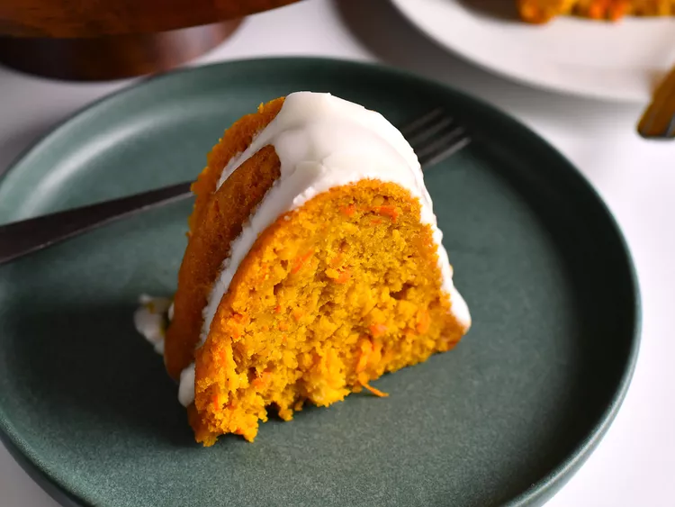

Carrot Cake
Home

Description
This carrot Bundt cake gets an extra boost of moisture and flavor thanks to the addition of both pureed and grated carrots. Crushed pineapple also adds a nice bright note. The cake is topped with a light, sweet cream cheese glaze. Feel free to add some chopped walnuts or pecans to the batter, if you wish.
Ingredients
- baking spray with flour
- 2 cups cake flour
- 1 1/2 teaspoons baking powder
Steps
- Preheat the oven to 350 degrees F (180 degrees C). Spray a 10-cup Bundt pan with a baking spray containing flour..
- Sift together cake flour, baking powder, and baking soda in a large bowl. Set aside.
- Place a fine mesh strainer over another large bowl. Pour crushed pineapple into the strainer, and use the back of a spatula or wooden spoon to press out as much moisture as possible. This should yield about 1 cup drained pineapple. Reserve pineapple juice for another use.
- Enjoy!